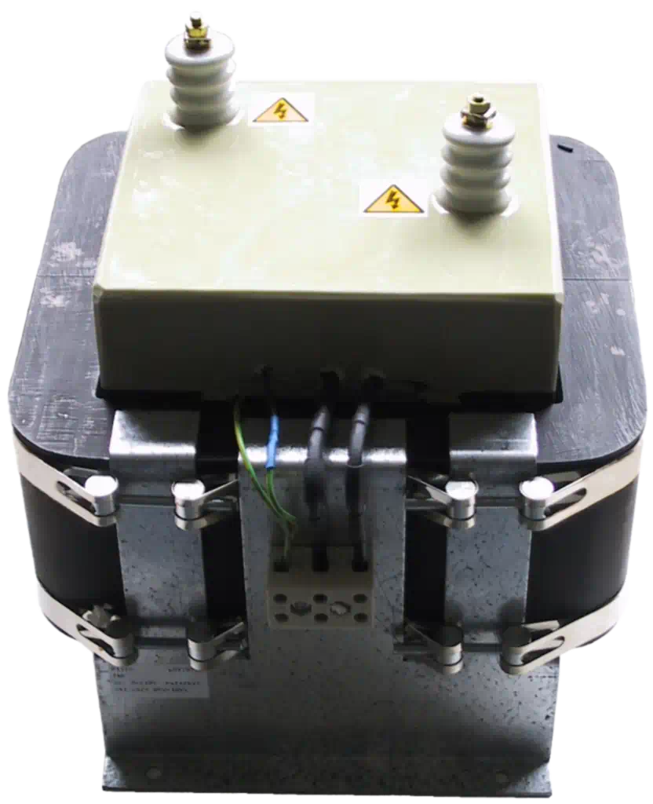
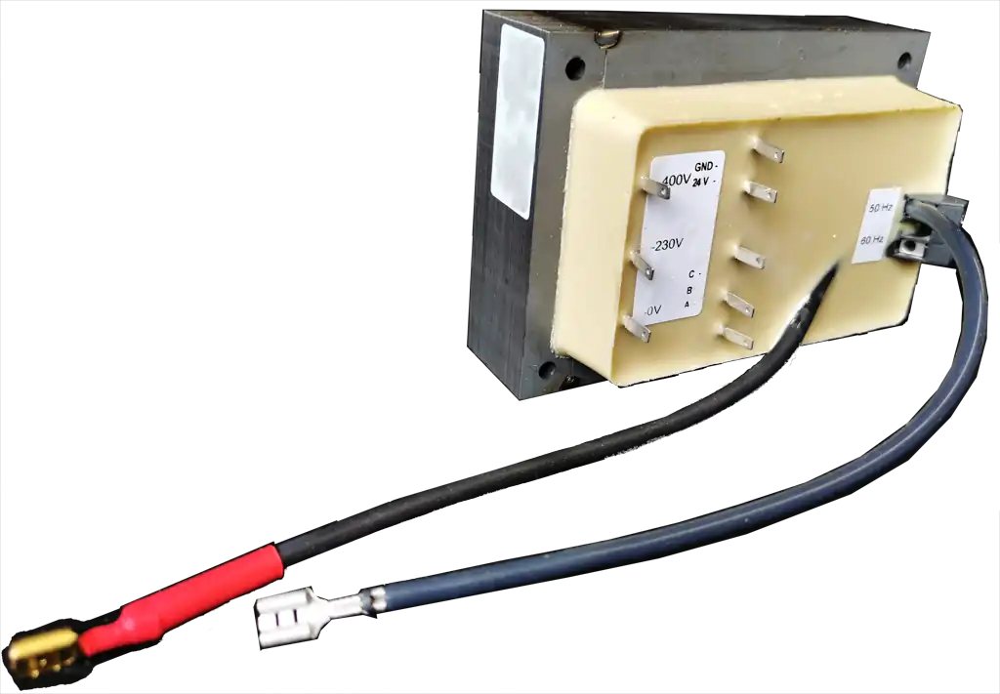
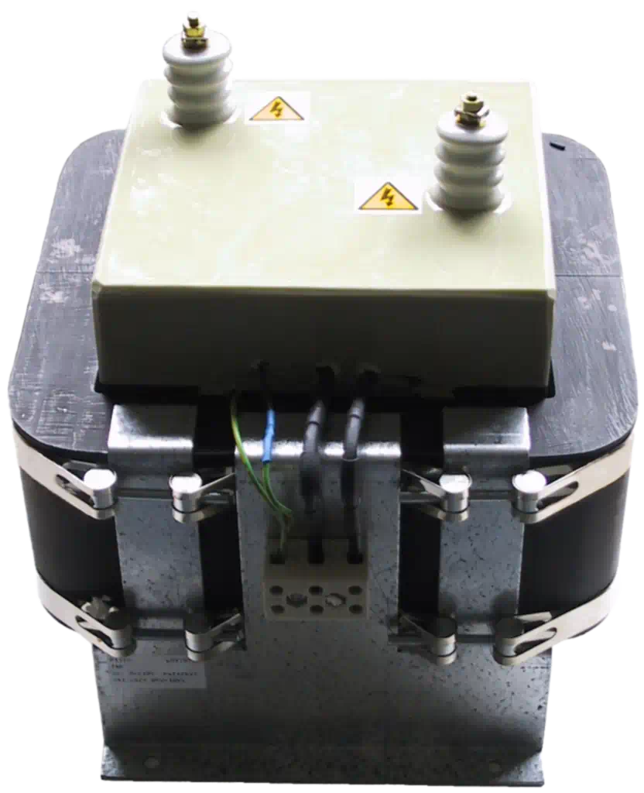
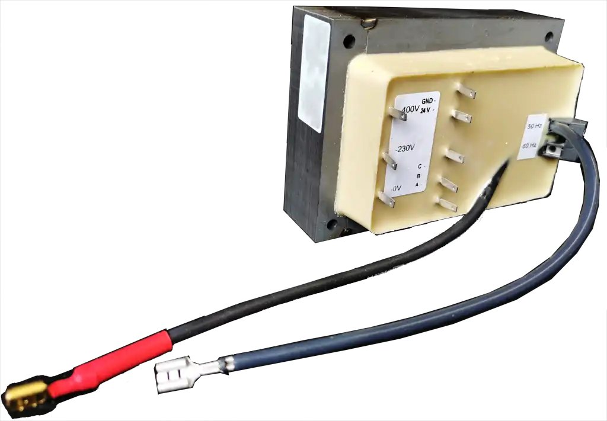

Unsere Transformatoren und Netzteile sind konzipiert für Hochspannungen in Kombination mit Kleinströme, Kurzschlussfestigkeit, Stabilisierbarkeit, Einstellbarkeit, Steuerbarkeit.
Durch jahrelange Erfahrung haben wir uns darauf spezialisiert, zuverlässige Hochspannungsprodukte herzustellen.
Sowohl Einzelstücke als Serienfertigung.
Ob Wasserreinigung, Luftreinigung oder andere Anwendungen, die von uns entwickelten und hergestellten Speisungen kommen in vielen Projekten zum Einsatz.
Die Reparaturabteilung kann oft Ihre einzigartigen, aber fehlerhaften Transformatoren reparieren oder reproduzieren (auch bei nicht mehr bestehenden Herstellern).
Von Transformatoren für Universitäten bis hin zu Zündspulen für Flugzeugtriebwerke, unsere Produkte werden in allen Bereichen eingesetzt, in denen Qualität und Zuverlässigkeit unerlässlich sind.
 





Picardi B.V. ist auf Hochspannungstechnologie spezialisiert.
Wir sind Ihr Partner, wenn Sie einen zuverlässigen Hersteller von Hochspannungstransformatoren und elektronischen Netzteilen suchen.
Wir beliefern internationale Konzerne im Bereich Luftreinigung, Wasseraufbereitung, Zündtechnik & Ionisierung.
Unsere Produkte kommen überall dort zum Einsatz, wo es auf Hochspannung ankommt, u.a.
Selbstverständlich werden unsere Netzteile nach Wunsch geliefert mit galvanisch getrennter Kommunikation zum computergestützte Überwachung und Steuerung, alles basiert auf Standardprotokollen, einschließlich Modbus.
Von Picardi entwickelte Netzteile und Transformatoren werden verwendet für
Unsere Produkte treffen Sie in Geräten, die statische Aufladungen entfernen oder aufbringen, wie z.B.
Netzteile für Sonderbeleuchtung gehören dabei auch zu unserem Sortiment.
Picardi entwickelt und fertigt Stromversorgungen für Geräte, die elektrochemische Reaktionen auslösen, wie z.B.
Unsere Stromversorgungen sind das Herzstück von Geräten, die Hochspannung zum Trennen von Flüssigkeiten oder Gasen verwenden, wie z.B.
Picardi B.V. ist ein alteingesessener Familienunternehmen, das 1975 von Herrn G. Wessels mit dem Ziel gegründet wurde, qualitativ hochwertige Hochspannungsprodukte mit langer Lebensdauer herzustellen.
Das Unternehmen war von Anfang an in Vroomshoop ansässig, einem kleinen Dorf am Kanal am Rande von Twente.
Die Produktion wurde zunächst in einem kleinen Raum hinter dem Haus am Vriezenveenseweg 31 durchgeführt; das Unternehmen wächst stetig und 1993 folgt der Umzug in die Geschäftsräume am Vriezenveenseweg 34a.
Im Jahr 2000 übernimmt der Sohn die Nachfolge seines Vaters: Hans Wessels gründet einen F&E-Bereich mit ausschließlichem Fokus auf hocheffiziente elektronische Hochspannungsversorgungen, wiederum getrieben von der Strategie, durch Material- und Energieeffizienz unsere Umwelt nachhaltig zu schützen und schonen.
Aus gesundheitlichen Gründen tritt er am 1. April 2018 als Direktor zurück und Johan Gerrits – der bereits seit 36 Jahren bei Picardi B.V. tätig ist – wird zum neuen Direktor ernannt.
2020 übernimmt Johan Gerrits das Unternehmen komplett; im Vorgriff auf die internationale Umweltgesetzgebung wird die Forschung intensiviert und die früher gewonnenen Erkenntnisse fließen in neue Hochfrequenz-Produktserien ein, die unter anderem für Feinstaub- und Viruskontrolle eingesetzt werden.
Unter dieser neuen Führung bleibt die ursprüngliche Ideologie (effizienter und sparsamer Umgang mit unseren natürlichen Ressourcen) im Vordergrund. Die Strategie: „Produkte ohne Sorgen.“ Denn weniger Abfall und Umweltverschmutzung beginnt mit weniger Störungen, weniger Ausfall, weniger Wartung und mehr Kontinuität bestehender Produkte.

Picardi B.V. verfolgt von Anfang an eine Zwei-Säulen-Strategie mit klarem Augenmerk auf umweltorientierte Forschung und Entwicklung: minimale Verschwendung, maximale Qualität. Hand in Hand mit unserer Twentscher Nüchternheit.
Unsere kontinuierlichen Bemühungen haben dazu geführt, dass wir über ein reiches Wissen und langjährige Erfahrung mit verschiedenen Materialien, Designs und Produktionsmethoden verfügen.
Beginnend 1975 mit dem klassischem «50 Hertz» sind wir 2022 zum Spezialisten gewachsen: Experte in der Entwicklung (sehr) hocheffizienter elektronischer Hochfrequentstromversorgungen für verschiedene Hochspannungsanwendungen, die sich problemlos in bestehende oder neue Steuerungssysteme integrieren lassen.
„Nachhaltig schützen und schonen von unsere Umwelt durch Material- und Energieeffizienz“ erfordert auch soziales Engagement. Denn stolz sind wir nicht nur auf unsere Produkte, sondern auch stolz auf die bemerkenswert geringe Fluktuation in unserem Unternehmen: Alt und Jung arbeiten Seite an Seite und miteinander bei unserem anerkanntem Ausbildungsbetrieb.
Wir bleiben ein wachsendes Familienunternehmen: 2022 besteht die Familie Picardi aus 12 Kernmitgliedern jeden Alters.
 Abzeichen")
")